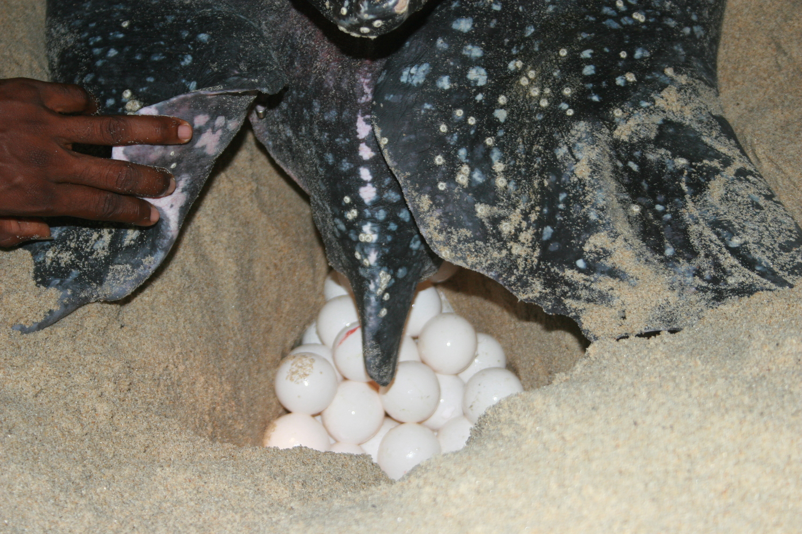

Plastic and other marine debris
Plastic has an impact on sea turtles at every stage of development. When they are hatchlings,
they crawl through plastic to go to the ocean; when they migrate, they swim through it; when they do,
they mistake it for jellyfish, one of their favorite diets; and when they are adults, they crawl back through it.
Each year, ocean pollution and ingestion or entanglement in marine debris cause the deaths of thousands of sea turtles,
whales, and other marine mammals, as well as more than 1 million seabirds.
80 percent of rubbish comes from landfills and other urban sources, and rivers carry the majority of it to the ocean.
These wastes, which are also devoured by fish, can entangle sharks, harm coral reefs, and amass in gyres (regions of slowly swirling water and weak breezes),
tend to build up around coasts.
How to Prevelant
Reducing the use of single-use plastics is essential for minimizing environmental pollution and promoting sustainable practices.
To prevent single-use plastics, you can adopt a few simple habits. Carry a reusable shopping bag wherever you go to avoid using plastic bags.
Invest in a durable, refillable water bottle to eliminate the need for disposable plastic bottles. Refuse plastic straws and cutlery when dining out
and bring your own alternatives or choose biodegradable options.
Opt for reusable food containers made of glass or stainless steel instead of single-use plastic containers
Fisheries Bycatch
One of the most important hazards facing sea turtles today is incidental capture and mortality brought on by interaction with drift/gill nets,
set nets, encirclement nets, longlines, seines, trawls, pots, and traps, especially in the Caribbean Sea.
Sea turtles can perish if they become trapped in fishing nets and other equipment because they must surface to breathe.
According to various estimates, hundreds of thousands of sea turtles perish annually due to bycatch. Numerous more had their flippers severed,
massive hooks embedded in their body, and other disabling wounds.
How to Prevelant
The use of selective fishing gear, such as turtle excluder devices (TEDs) and acoustic deterrent devices (pingers), can help reduce the accidental
capture of non-target species.
Implementing seasonal fishing closures in areas where vulnerable species are known to occur can also minimize bycatch.
Additionally, promoting and enforcing the adoption of responsible fishing practices and regulations, such as proper net mesh sizes and limits on fishing effort,
can contribute to the reduction of bycatch.
Consumption of Turtle Eggs
Despite the fact that sea turtles are protected by legislation in the majority of nations,
their survival is nevertheless seriously threatened by the illicit traffic in their flesh, eggs, and shells.
The meat and eggs from these animals are gathered for human consumption and, in some cultures, are regarded as delicacies.
The sale of turtle eggs is a significant sector that employs numerous individuals in several nations.
In certain coastal towns in underdeveloped nations, it's possible that residents lack access to occupations that will support their families.
We don't believe that individuals who shoot turtles for their meat or gather their eggs for sale or consumption are evil people;
yet, it can be challenging to choose between providing for one's family and safeguarding a wild species.

How to Prevelant
It is important to raise awareness about the ecological importance of turtles and the detrimental impact of egg consumption on their populations.
Implementing strict legal protections and enforcing regulations against the collection and sale of turtle eggs can act as a deterrent.
Engaging local communities in conservation efforts and providing alternative livelihood opportunities can help alleviate the pressure on
turtle eggs as a food source